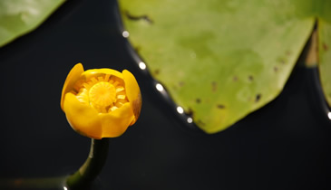
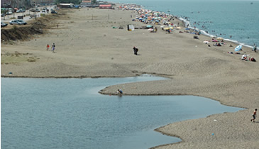
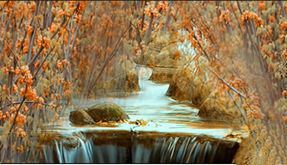
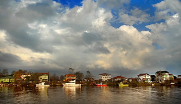

Acarlar Longoz Gölü
Longoz, subasar orman ekosistemi olarak bilinen, tabanında çeşitli ağaç ve bitki türleriyle kaplı olan sulak alanlara denir. Kumullar nedeniyle denize ulaşamayan derelerin, bataklık alanlarda son bulması sonucu doğarlar. Taban suyu seviyesi kış ve ilkbahar aylarında artarken, sonbahar ve yaz aylarında çekilmektedir. Yazın suları çekilen longoz alanı köylülerce tarım arazisi olarak kullanılabilmektedir.
Acarlar Longozu olarak adlandırılan göl, Sakarya Nehri’nin Karadeniz’e döküldüğü, ağız kesiminin batısında yer alır. Alanının en büyük olduğu dönemde 1.562 hektar, derinliği ise 1,5 metredir. Acarlar Longozu, İğneada Longozundan sonra Türkiye'deki en büyük ikinci subasar ormanıdır. Göl orman, sulak alan, deniz kıyısı habitatları olmak üzere, pek çok ekosistemi ve göl tabanı da geçilmesi zor orman formasyonunu barındırır. Bu özellikleri sebebiyle birçok bitki ve hayvan türüne de ev sahipliği yapar. Deniz kıyısı habitatında yer alan kumul alanlar ortalama 5 metre yükseklikte olup sahile paralel uzanmaktadırlar. Acarlar Longozu, Türkiye’de kesintisiz uzanan en uzun kumul sistemine sahiptir. Bu kumullar bölgede pek çok derenin Karadeniz’e ulaşması engelleyerek, Acarlar Gölü’ nü meydana gelmiştir.
Gölün bünyesinde varlığını sürdüren canlı türleri de gölün önemini arttırmaktadır. Öncelikle kumul alanlarda yer alan bitki türlerinden bahsetmek gerekirse; karaya doğru 30 metrelik mesafeyi kaplayan ve Leymus racemosus ssp. sabulosus ile karakterize edilen, ön cephe kumul bitki topluluğu vardır. İlerisinde ender görülen kumul bitki türleri bakımından zengin olan, sabitleşmiş gri kumul bitki topluluğu görülmektedir. Bu bitki türleri arasında Centaurea kilaea, Jurinea kilaea, Matthiola fruticulosa bulunmaktadır. Çok lokal olarak bulunan Peucedanum obtusifobum ve ilk kez buradan toplanan Silene dichotoma ssp. euxina sayılabilir.
Ormanlık alanlarda yer alan türlerde ise iyi gelişmiş tırmanıcı Smilax excelsa, kızılağaç (Alnusglutinosa), söğüt türleri (Salix spp.) ve dişbudak (Fraxinus angustifolia ssp. oxycarpa) ağırlıktadır. Bu ormanlar ayrıca nadir bitki popülasyonlarını da beraberinde yaşatır. Hottonia palustris (Türkiye'de yalnızca burada bulunur), Leucojum aestivum ve Thelypteris palustris gibi...
Önemli Bitki Alanı (ÖBA) kabul edilen Acarlar Gölü ve Longoz Ormanı 25.06.1998 tarihinde I. Derece Doğal Sit Alanı ve Yaban Hayatı Koruma Sahası ilan edilerek koruma altına alınmıştır.
Gölde, Bern Sözleşmesi’ nde adı geçen üç bitki türü bulunmaktadır. Su menekşesi (Hottonia palustris) Türkiye’de sadece burada yer alır. Göl soğanı (Leucojum aestivum) ve Thelypteris palustris ülkemizde nadir su bitkileri arasındadır. Bu türlere ek olarak Türkiye’de ilk burada saptanan, çok nadir bir bitki türü olan Kyllinga brevifolia’da ilgi gören bitki türlerindendir.
Kuş ve Bitki gözlemciliği için ideal bir yer olan Acarlar Gölü’nde özellikle kuşlar da ilgi çekmektedir. İstanbul Üniversitesi ve Türkiye Çevre Koruma ve Yeşillendirme Kurumu (TÜRÇEK) tarafından yürütülen göldeki bitki çeşitliliğini ve kuş türlerini inceleme çalışmaları devam etmektedir.
Acarlar Gölü’nde eko turizmin hayata geçirilmesine yönelik çalışmalar başlamıştır. Longoz’u görmek için yerli ve yabancı turistler Karasu’ya akın etmektedir. Doğa turizmini tercih edenler ve doğa fotoğrafçılığı yapmak isteyenler için göl oldukça ilgi çekicidir.
Bunların yanı sıra gölün giriş kısmı ziyaretçiler için yürüyüş alanı olarak düzenlenmiş bir de kır lokantası yapılmıştır. Ayrıca turizme açılan gölde, tur hizmeti vermek için bir tekne ile dört deniz bisikleti bulunmaktadır.
Küçükboğaz Lagün Gölü
50 hektar büyüklüğündeki Küçükboğaz Gölü ilçe merkezinin doğusunda 5 km mesafede yer alır. Etrafı çamlarla kaplı ve dinlendirici sessizliği ile Küçükboğaz Gölü, hafta sonları turistlerin uğrak yerlerinden biridir. Olta balıkçılığına açık olan bu gölde kızılkanat, sazan, tatlı su kefali gibi balık türleri de mevcuttur.
Küçükboğaz Gölü’ nün en önemli özelliği bir lagün gölü olmasıdır. Lagün, denizden kıyı kordonu veya bir set ile ayrılan göl türüdür. Gölün suyu kış aylarında yağış miktarındaki artış nedeniyle artmaktadır. Halk tarafından set üzerinde açılan oluklar sayesinde fazla su denize akıtılmakta ve gölle deniz birleşmektedir.
Gölün çevresindeki mesire yerinde insanlar piknik yapıp, balıkçılık veya avcılık yaparak hoşça vakit geçirmektedirler. Ayrıca geceyi göl kenarında geçirmek isteyen yerli ve yabancı turistlerin bölgede konaklamaları için gölün her iki tarafında dinlenme tesisleri bulunmaktadır
Maden Deresi
Karasu’da istediğiniz şeyi sadece hayal etmeniz yeterlidir. Diyelim ki deniz, kum, güneş üçlüsünden sıkıldınız ya da sıcak havadan bunaldınız, o zaman kendinizi ormanın derinliklerinden gelen kuş seslerine ve su şırıltısına bırakın. Çam Dağı’ ndan doğan Maden Deresi görülmeye değer yerlerden biridir.
Yaklaşık olarak 130 yıl önce burada açılan simli kurşun ve çinko madeni, 2 Haziran 1889 tarihinde Karasu Köyü, Osmanlı vatandaşlarından Hafız Nuri Efendi'ye verilmişti. 1900 yılında Rus, Fransız ve İtalyan ortaklığıyla kurulan Karasu Madenleri Şirketine devredildi. Daha sonra bu bölgede işletilen kurşun, boraks, çinko ve altın madenleri kaderlerine bırakılmışlardır. Derenin adını, yakınlarında bulunan bu maden yataklarından aldığı söylenmektedir. Kalıntıların arasından büyük bir coşkuyla akan şelalenin sesini dinleyerek yaptığınız piknikte yedikleriniz size daha bir lezzetli gelecektir. Bölge uzun yürüyüşler yapmak için ideal bir toprak yola sahiptir. Kayın, çınar, ceviz ve fındık ağaçları arasında yürürken, yeşilin ne kadar çok tonu olduğuna şaşıracaksanız. Kâh çocuklar gibi paçalarınızı sıvayıp derenin coşkusuna eşlik edebilir kâh mevsimine göre yaban çileği veya böğürtlen toplayıp afiyetle yiyebilirsiniz.
Yolun sonunda ise, sizi ağaçların altına kurulu ahşap kamelyalarıyla bir alabalık çiftliği karşılıyor. Derenin sularını kullanan tesiste, alabalıkların sudaki sıçrayışları görülmeye değerdir. Ayrıca tereyağında pişen alabalıkların tadına mutlaka bakmalısınız. Balık sevmeyenler ama yine de bu güzel ortamın keyfini sürmek isteyenler için de farklı yemek seçenekleri bulunmaktadır.
Kamelyaların altında çayınızı yudumlarken, en son ne zaman böyle bir gün geçirdiğinizi düşünmeden edemeyeceksiniz. Her ne kadar konaklama imkanı olmadığı için bölgeye geziler günübirlik ziyaretler şeklinde yapılsa da derenin serinletici etkisi ve huzur veren şırıltısından, bol oksijen dolu ormandan ayrılmak istemeyeceksiniz. Geceyi ailenizle ya da arkadaşlarınızla birlikte çadır kurup kamp yaparak geçirebilirsiniz.
Maden Deresi, doğayı özleyen yoğun şehir hayatından bunalan, içindeki çocuğu hiçbir zaman unutmayanlar için önemli bir yer olma özelliğini taşıyor. Maden Deresi doğasever, maceraperest yerli ve yabancı turistlerin de görmeden ayrılmadıkları bir yerdir.
Yeni Mahalle
Yeni Mahalle, Karasu ilçesinin mahallerinden biri olup, ilçe merkezine uzaklığı 5 kilometredir. Yeni Mahalle, Karasu için diğer yerleşim birimlerine göre özel bir konuma sahiptir. Dinlendirici ve sakin sahili onu çekici kılmaktadır. Yeni Mahalle’nin denizle sonlandığı noktada, Sakarya Nehri de genişleyerek Karadeniz’le buluşur. Özellikle kış aylarında, denizin bir kabarıp bir sönen dalgalarıyla Sakarya Nehri’ni kabul edişini izlemek ayrı bir keyiftir.
Yeni Mahalle’deki balıkçı lokantalarında cömert renkleriyle gün batımını izlemek ise rüya gibi bir andır. Bu kumsalda bir hafta sonu tatili geçirmek isteyenler için çeşitli alternatifte konaklama olanakları bulunmaktadır.
Yeni Mahalle’nin girişinde başlayan parke yol, Sakarya Nehri’yle birlikte sizi denize götürmektedir. Size nehrin üzerinde yemek yiyecekmişsiniz hissini verecek şekilde dizilen balıkçı lokantalarını ve bir sürü ahşaptan yapılmış balıkçı teknelerini görmek mümkündür. Her daim taze balık yiyebileceğiniz bu lokantalar ve tekneler, yerli halkın yanı sıra yabancı turistlerin de ilgisini çekmektedir. Ayrıca dilerseniz balığınızı ahşap teknelerde de yiyebilirsiniz.
Yeni Mahalle nehir ve deniz havasını ciğerlerinize çekebileceğiniz hem hafta sonu hem de uzun soluklu tatilleriniz için unutamayacağınız bir yerdir.